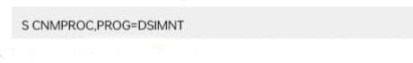

To test the NetView program that you installed, run the steps in the following order:
If you are running an additional copy of the NetView program on this LPAR and are using the hardware monitor, enter the following command at the system console:
This completes installation and migration of the NetView program with minimum function. To run the NetView program in production, consider the following actions:
For each administration task that you have prepared, test to ensure that it has been done correctly. When you are satisfied, the NetView program is ready for full production.
Note: If you resume production under a previous release of the NetView program, cancel the NetView subsystem job and close the V6R3 application.
Table 39. Additional Installation, Configuration, Customization, and Tuning Information
| If you want information about... | Refer to... |
|---|---|
| Updating NetView program for your environment | IBM Z NetView Installation: Configuring Additional Components |
| Updating NetView program for graphics | IBM Z NetView Installation: Configuring Graphical Components |
| Writing installalation exits | IBM Z NetView Programming: Assembler or IBM Z NetView Programming: PL/I and C |
| Writing command processors | IBM Z NetView Programming: Assembler or IBM Z NetView Programming: PL/I and C |
| IBM Z NetView Enterprise Management Agent | IBM Z NetView Installation: Configuring the NetView Enterprise Management Agent |
| IBM Z NetView for Continuous Availability | IBM Z NetView for Continuous Availability Configuring and Using the GDPS Continuous Availability Solution |
“Migrating from NGMF to the NetView Management Console” on page 111 describes the steps to follow to migrate from NGMF to the NetView management console. The last version of NetView that included NGMF support was NetView V1R4. NetView V6R3 does not allow a NETCONV connection to an NGMF server. Current NGMF users must be upgraded to the NetView management console.
“Migrating the NetView Management Console Topology Server and Console” on page 111 describes how to migrate to the NetView V6R3 NetView management console from previous levels of the NetView management console.
Migration consists of replacing your NGMF graphic data servers and graphic monitor workstations with NetView management console workstations (both console and server). GMFHS requires no modification when a user migrates from NGMF to the NetView management console.
Other migration considerations include:
Complete the migration of the NetView V6R3 host program before migrating the NetView management console topology server and console. New resources for V6R3 are displayed with a red X in place of the icon.
A console at the V6R3 topology console communicates only with a server at the V6R3 level, and a server at the V6R3 level communicates only with consoles at the V6R3 level. Also, the Java environment for the NetView management console has been upgraded. Therefore, for each server, you must install the V6R3 level of the NetView management console topology server at the same time you install the V6R3 level of the NetView management console topology console on all consoles that communicate with that server.
| If you want information about... | Refer to... |
|---|---|
| Migrating the NetView management console topology console | egvread1.me |
| Migrating the NetView management console topology server | egvread2.me |